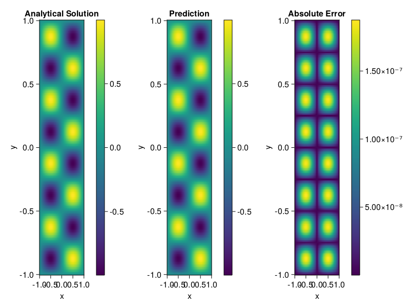

Helmholtz equation
Let us consider the Helmholtz equation in two space dimensions
\[\begin{aligned} &\Delta u(x, y)+k^{2} u(x, y)=q(x, y), \quad(x, y) \in \Omega:=(-1,1)^2 \\ &u(x, y)=0, \quad(x, y) \in \partial \Omega \end{aligned}\]
where
\[q(x, y)=-\left(a_{1} \pi\right)^{2} \sin \left(a_{1} \pi x\right) \sin \left(a_{2} \pi y\right)-\left(a_{2} \pi\right)^{2} \sin \left(a_{1} \pi x\right) \sin \left(a_{2} \pi y\right)+k^{2} \sin \left(a_{1} \pi x\right) \sin \left(a_{2} \pi y\right).\]
The excat solution is $u(x,y)=\sin{a_1\pi x}\sin{a_2\pi y}$. We chose $k=1, a_1 = 1$ and $a_2 = 4$.
using ModelingToolkit, IntervalSets, Sophon, Lux
using Optimization, OptimizationOptimJL
@parameters x,y
@variables u(..)
Dxx = Differential(x)^2
Dyy = Differential(y)^2
a1 = 1
a2 = 4
k = 1
q(x,y) = -(a1*π)^2 * sin(a1*π*x) * sin(a2*π*y) - (a2*π)^2 * sin(a1*π*x) * sin(a2*π*y) + k^2 * sin(a1*π*x) * sin(a2*π*y)
eq = Dxx(u(x,y)) + Dyy(u(x,y)) + k^2 * u(x,y) ~ q(x,y)
domains = [x ∈ Interval(-1,1), y ∈ Interval(-1,1)]
bcs = [u(-1,y) ~ 0, u(1,y) ~ 0, u(x, -1) ~ 0, u(x, 1) ~ 0]
@named helmholtz = PDESystem(eq, bcs, domains, [x,y], [u(x,y)])\[ \begin{align} \frac{\mathrm{d}}{\mathrm{d}y} \frac{\mathrm{d}}{\mathrm{d}y} u\left( x, y \right) + \frac{\mathrm{d}}{\mathrm{d}x} \frac{\mathrm{d}}{\mathrm{d}x} u\left( x, y \right) + u\left( x, y \right) =& - 166.78 \sin\left( 3.1416 x \right) \sin\left( 12.566 y \right) \end{align} \]
Note that the boundary conditions are compatible with periocity, which allows us to apply BACON.
chain = BACON(2, 1, 5, 2; hidden_dims = 32, num_layers=5)
pinn = PINN(chain) # call `gpu` on it if you want to use gpu
sampler = QuasiRandomSampler(300, 100)
strategy = NonAdaptiveTraining()
prob = Sophon.discretize(helmholtz, pinn, sampler, strategy)
@time res = Optimization.solve(prob, BFGS(); maxiters=1000)u: ComponentVector{Float64}(filters = (filter_1 = (bias = [0.4829209914965948; -0.15949975962538257; … ; -0.7494724554474759; -0.7602887160069515;;]), filter_2 = (bias = [0.0846709651321122; 0.7702061475188282; … ; -0.4306223821674318; 0.8908983221237021;;]), filter_3 = (bias = [0.6784199644105608; 0.7196850678513433; … ; -0.8140678109638941; 0.5298428733375846;;]), filter_4 = (bias = [-1.0390389532651605; -0.6920439469698059; … ; 0.5497741417629457; -0.689627229999874;;]), filter_5 = (bias = [-0.9531817306056004; 0.3938217514416444; … ; 0.7602295445378872; -0.765696287495468;;])), linear_layers = (layer_1 = (weight = [0.36270029943706106 0.019845638845586714 … -0.5699092093108841 -0.15065696878955312; -0.3584289678680097 -0.1211267062698149 … -0.24907630300256642 0.13123638039346133; … ; 0.2731503869031012 0.1456975668491622 … -0.34608973957012634 -0.3412147548688287; 0.01800414557480157 0.39997478758279337 … 0.14130680769603787 -0.042186683912200144], bias = [-0.01642872126449699; -0.07546934526861908; … ; 0.046917954917260696; 0.01382316143632998;;]), layer_2 = (weight = [-0.4408550596258874 -0.34460403771283893 … 0.01597266547162497 -0.30133605513551204; 0.3719708070753633 0.26204714906533155 … 0.3606585626273755 -0.13981198901215633; … ; -0.44689115871288604 -0.4173170734140665 … -0.17934337269638728 -0.044586690277812396; -0.20360015074641194 0.3780123466587716 … 0.023679916361791273 -0.3543389853039469], bias = [-0.020694294253903747; -0.023961596483763555; … ; 0.010760195422087698; 0.00238944753860086;;]), layer_3 = (weight = [-0.11402568876884625 -0.4091130411359692 … 0.08114196407467077 0.4122814688667948; 0.023079737616411237 0.1267570529337655 … 0.0316087603314132 -0.3478617282448557; … ; 0.1426100104495328 0.061635037157115845 … -0.20752660683982063 -0.19810654138821265; -0.31089740043972663 -0.1818757338099516 … 0.37972479059424885 0.43657225734766764], bias = [-0.0005583406197524821; 0.01478967542605141; … ; -0.003645865903285639; 0.013953334833558139;;]), layer_4 = (weight = [-0.3284355859529134 0.19437494438983266 … -0.332480969083962 0.0992498381401736; -0.29843764326080924 -0.13638981082695553 … -0.3119304783634242 -0.31224045934759914; … ; 0.2920699061442773 -0.30186652485099713 … 0.008356279302365294 -0.35852154446571005; -0.04432462070073015 0.4406283274335488 … -0.09224930037048268 -0.1993190333700125], bias = [-0.009704701751235521; -0.0047052429383965845; … ; 0.0015416858404837363; 0.0013397684324902117;;])), output_layer = (weight = [-0.02717530625014781 -0.5095766939626719 … 0.1989544800408724 -0.20924696886127897], bias = [0.009707139257313055;;]))Let's plot the result.
phi = pinn.phi
xs, ys= [infimum(d.domain):0.01:supremum(d.domain) for d in domains]
u_analytic(x,y) = sinpi(a1*x)*sinpi(a2*y)
u_real = [u_analytic(x,y) for x in xs, y in ys]
phi_cpu = cpu(phi) # in case you are using GPU
ps_cpu = cpu(res.u)
u_pred = [sum(phi_cpu(([x,y]), ps_cpu)) for x in xs, y in ys]
using CairoMakie
axis = (xlabel="x", ylabel="y", title="Analytical Solution")
fig, ax1, hm1 = heatmap(xs, ys, u_real, axis=axis)
Colorbar(fig[:, end+1], hm1)
ax2, hm2= heatmap(fig[1, end+1], xs, ys, u_pred, axis= merge(axis, (;title = "Prediction")))
Colorbar(fig[:, end+1], hm2)
ax3, hm3 = heatmap(fig[1, end+1], xs, ys, abs.(u_pred-u_real), axis= merge(axis, (;title = "Absolute Error")))
Colorbar(fig[:, end+1], hm3)
fig